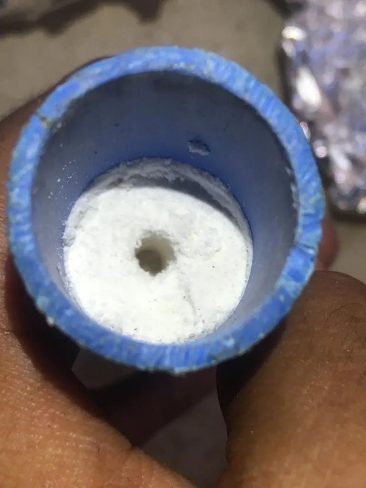
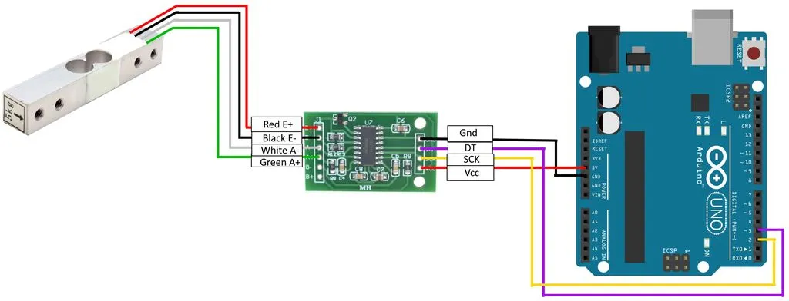
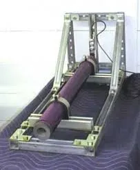
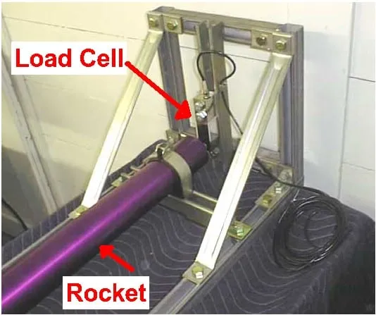
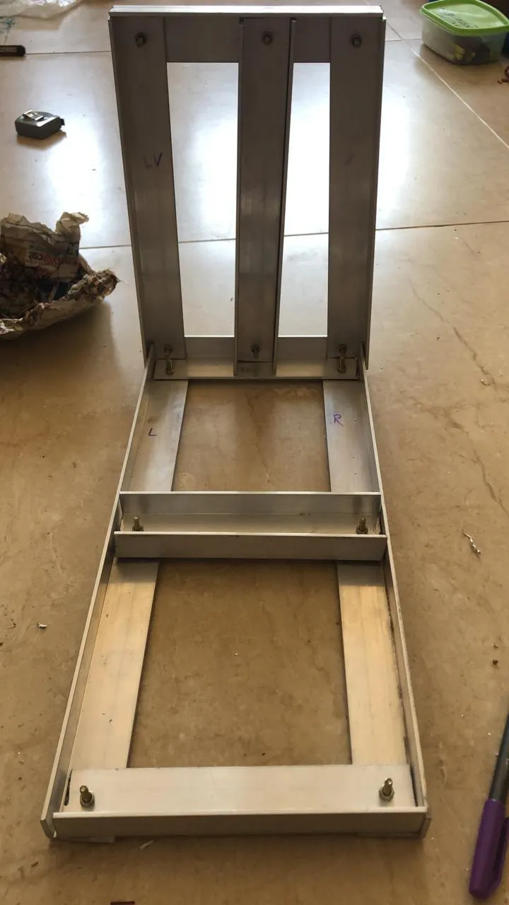
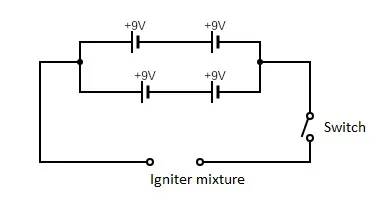

Team Members
IEEE:
- Aditi Marathe
- Drishika Nadella
- Supreeth
ACM:
- Kiran Nandanan
- Manoj
- Punit Chauhan
- Suryakant
AAC:
- Supreeth S
- Devan
- D. R. Shyam
- Tarun
Introduction:
The project of Rocket Propulsion System is a continuation of the efforts in the academic year 2018-19. The project focused on development of an amateur rocket capable of producing thrust to carry a payload consisting of a measurement device or a sensor upto a certain altitude. Amateur Rocketry is a well established field amongst rocket enthusiasts. Amateur rockets use solid propellants to fuel the rocket. These propellants are ignited using a specially designed ignition system consisting of an electrical circuit. A number of different components are essential in the success of a fully functional rocket.
Aim:
The project was aimed in the design and development of the following:
- Solid Propellant
- Thrust measurement system
- Ignition System
The integration of all the individual subsystems is used for future development of modifications in the fundamental structure of the amateur rocket.
Solid Propellant:
A number of solid propellants are used in amateur rockets. The previous academic year’s efforts in the project attributed that a mixture of Potassium Nitrate and Dextrose was the most optimum solution in terms of efficiency and cost. Further literature review was done to explore methods of manufacturing the solid propellant. The 2 methods are:
Dry grinding:
In this method KN is ground milled (could be done by lead balls) to a fine powder and then mixed thoroughly with the sugar propellant. This mixture does not melt both the KN and sugar. KN melts at 631 degrees. What this method actually does is melt the sugar and then with lots of stirring, it coats the KN grains with the melted sugar. So the finer the KN is ground, the more intimate contact the sugar will have with the KN and the better the propellant will be.
Heated caramelization:
Just enough water is added to dissolve completely the KN and sugar. The mixture is brought to a boil and the water quickly evaporates off. it goes through several stages that are distinctive. First it boils like boiling water, then as most of the water is driven off, it starts bubbling and spitting. Then that stops and it just hisses a little. At last it turns to a mashed potato consistency. The mixture should be stirred a lot after the first boiling stage. The more it is stirred, the faster it comes up to temperature and reaches completion. The temperature first stays around 212 until most of the water is driven off. Once it gets to the hissing stage where the last of the water is being driven off, the temperature starts to climb and you are getting close. When it gets to around 350 (176.17) degrees it is ready to cast.
In contrast to the dry heated method which coats the KN particles with sugar, the dissolved and heated method actually dissolves both ingredients which then mix intimately together. When the water is driven off, the two stay in intimate contact and then as they cool, they both recrystallize together providing a better mixture. In reality, if in the dry mix method, the KN is ground to a fine talc-like powder and mixed very thoroughly before heating, the resulting grains will be comparable in performance.
Conclusion:
The dry heating method was decided to be the most optimum choice taking into consideration factors like ease of manufacturing if bulk quantities, cost and effectiveness.
Manufacturing of the Solid Propellant:
Materials Required:
- Sucrose
- Potassium Nitrate-Mixture must contain 65% of kno3 and 35% of sucrose
- Grinder-to mix for 20-25 seconds for fine mixing tube-5cm in diameter and 35-50 cm in length (either of PVC vor steel will be fine)
- Measuring Scale
- Iron oxide(depends on mass of propellant one percent of the total propellant mass)
- Container/plastic cup -to hold the mixture while mixing
- Drill bit for cylindrical core
- 5cm diameter ramming rod
Steps of Manufacture:
-
Measure out KNO3 and dextrose in a 65:35 ratio separately and finely grind each ingredient into a fine powder and mix the ground powders
-
Take this mixture and gently pack it into a pvc casing before using a mallet to ram the powder into a compact form

Conclusion:
The testing of the propellant unfortunately could not be completed due to the COVID-19 situation. The unexpected COVID-19 situation has halted progress, as the testing cannot be done remotely.
Thrust Measurement System:
A number of educational and engineering instrument companies offer solutions for dynamic force measurements that can be successfully adapted for model rocketry.
Combining an Arduino Uno microcontroller, an LCD keypad shield, an HX711 breakout board, a 10Kg loadcell, and a custom made engine mount yields a sensitive and accurate test stand or dynamometer for testing the thrust in Newtons of model rocket motors. The circuit is also usable as a stand-alone gram scale. Functionally, a model rocket motor is affixed to a loadcell, which generates a very small analog voltage difference, proportional to the force applied. The small voltage is applied to an HX711 breakout board, which amplifies the voltage and converts to serial digital data. The serial data is received by the Arduino microcontroller, which applies a calibration factor so that output is shown as grams of force. The following is the circuit diagram:

Conclusion:
The calibration of the load cell was done using standard weights. However the load cell calibration was leading to an error bar of about 50%, rendering the loadcell useless. Further calibration and tests were not possible due to the covid-19 situation.
The Measurement mount was also designed to accommodate the thrust measurement circuit. The following images were used a reference for making the thrust mount:


The following image shows the mount made using Aluminum L-sections, angle joints, nuts, bolts, drilling machine and other related equipment.

Ignition System:
The ignition system to aid the propulsion of the rocket was initially made using a gunpowder igniter. We followed the below steps to create the igniter mixture, using common recipes found on the internet. To make the gunpowder:
- We obtained some saltpetre (potassium nitrate), which is often sold under the name of stump remover and elemental sulphur from a vendor in Mangaluru.
- We acquired typical wood charcoal from a vendor in Mangaluru.
- The ingredients were finely ground using a coffee grinder until the mixture was fine, with a few small chunks of the charcoal
- Proportions used were: 74.8% saltpetre 13.3% charcoal 11.9% sulphur.
- All three ingredients were mixed together in the coffee grinder. Each ingredient was moistened a little for safety
The igniter wire used was a 24 SWG nichrome wire. Nichrome is an alloy of nickel and chromium and has a higher resistance than other common wire used to carry current such as aluminum or copper. It also has a higher resistance than iron, steel, or stainless steel. A lacquer or an epoxy resin is required to coat the nichrome wire with the gunpowder mixture so that ignition takes place easily. Many pyrogens use NC lacquer and mix the ignition powder into it. NC stands for nitrocellulose which is what smokeless gunpowder is made from. NC lacquer can be made using acetone and ping-pong balls (which are almost 100% nitrocellulose). The steps followed to make the NC lacquer are as listed below:
- The formula used was six ping-pong balls and eight ounces of acetone.
- Acetone (acquired from a local vendor) was added to a glass jar. Six ping-pong balls were cut up and added to the acetone such that the acetone completely submerges the balls.
- Care was taken to ensure that the jar is sealed tight so that over time, the acetone does not evaporate. If it does, then only a mass of celluloid is left behind.
- The dissolving process with the cut up balls took nearly a day. Although they started dissolving almost immediately, a smooth, paint-like consistency was achieved after overnight dissolving.
- The mixture was occasionally stirred for even dissolution.
- The final lacquer had a consistency and colour similar to that of glue.
The assemblage of the ignitor using the prepared ingredients was done using a PVC pipe, nichrome wire and the lacquer prepared.

Result - There was no observable ignition seen. The ignition power was inadequate. There was no notable temperature change in the mixture even after powering it for three minutes. The possibility of a faulty wire was considered. The nichrome wire was heated up separately to check for this, and when the circuit was completed, the wire heated up instantaneously with a characteristic glow. The circuit was also complete. Therefore, it was concluded that the igniter mixture was at fault.
An alternative ratio of the gunpowder and the potassium nitrate was considered. A new mixture, consisting of 20% charcoal that was finely powdered and 80% potassium nitrate (saltpetre) was made and tested with a similar circuit design.
Result - The mixture did not ignite suitably. The batteries were drained before a second set of testing could be done. Next, an alternative pyrogen consisting of saltpetre and sugar was considered. This mixture was created with equal parts saltpetre and sugar. In a manner similar to the previous method of assembling the igniter, a new igniter setup was made with the saltpetre-sugar pyrogen mixture. In addition, the batteries were tested for their voltage using a multimeter and it was seen that the batteries had a voltage of 9V.
The circuit was completed using the same circuit design and the ignition system was tested in a pit in an open field.
Result - There was no noticeable result beyond the igniter mixture slightly heating up. It was tested again with the protective masking tape removed. The result was the same. The igniter mixture was then scooped out to check if the internal connections are correct. It was found that the nichrome wire was not lighting up, despite keeping the circuit connections uniform. It was attributed to a possible break in the internal parts of the circuit.
The nichrome wire was tested again for its effectiveness. The nichrome wire was directly connected to an electric socket.
Result - It was observed to get red hot instantaneously. The resistance between the leads of the wire was measured with a multimeter. It was observed that the voltage was 2V with a current of 180mA, giving a resistance of about 11 ohms. The expected resistance is between 1.4 to 1.6ohms, so it was inferred that the current in the circuit was 1/10th of what it should be, implying that the joule heating is a 100 times less than expected.
Conclusion
Many obstacles were encountered during this project and questions regarding the feasibility of the circuit and the pyrogen mixture remain unanswered at the moment. The unexpected COVID-19 situation has halted progress, as the testing cannot be done remotely.The project has several future prospects and other methods to test. Future work to be done:
- Ignite the pyrogen mixture with an alternate igniter.
- Test the igniter with the nichrome wire making a sharp V shape.
- Test the igniter with a new set of batteries, with increased voltage.
- Use Li-polymer batteries instead of the DC ones.
- Test the circuit with a thick, single stranded copper wire with a diameter of about 1.5mm.